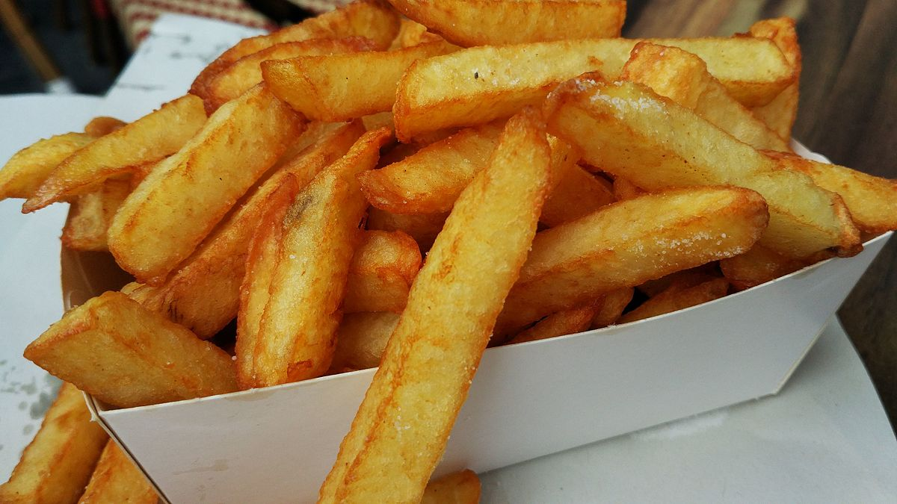

Receta de Papas Fritas
Aqui aprenderemos a hacer papas fritas
Ingredientes:
- 1 kg de Papas
- 1/2 litro de Aceite
- Sal al gusto
Preparación:
- Comprar las papas.
- Colocarlas en un recipiente para poder lavarlas.
- Pelar las papas con cuchillo o un pelador de papas.
- Cortar las papas de la forma desaeda, usualmente en forma tetraédrica.
- Lenar la sartén o freidora con aceite y dejar que caliente 5 o mas minutos.
- Colocar las papas lavadas y peladas en la sartén.
- Freír durante 15 a 20 min o hasta que queden doradas.
- Agregar sal al gusto.
- Sirva y Disfrute de sus papitas fritas uwu.
